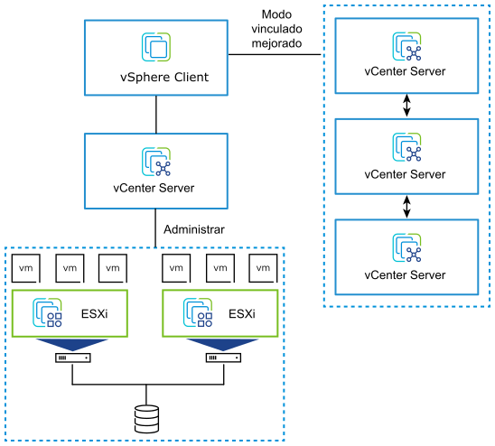

Proyectos destacados Ver todos mis proyectos en github

Proyecto destacado Homelab para pentesting
He diseñado, configurado y mantenido un laboratorio virtual para simular
tanto ataques como defensas en un entorno empresarial. Usando VMware, la estructura se basa en 1
maquina servidor, 4 clientes y un atacante tanto interno como externo a la red.
Networking
Security
Cisco packet Tracer
SIEM
Proyecto destacado Toolkit de herramientas de cyber propio
Usando lenguajes como python y el propio bash, he creado mi propio set de herramientas para ciberseguridad, imitando algunos de los programas mas famosos, pero con un entendimiento mas profundo sobre como funcionan y mis propios "tweaks"